Hoy es un día especial para tí
¡¡Feliz día Mamá!!
Gracias por tu paciencia, por tus consejos, por tus abrazos que siempre me dan calma, y por estar ahí en cada momento, bueno o difícil.
No hay palabras que alcancen para agradecerte, pero hoy solo quiero que sepas lo importante que eres para mí.
Recuerdos
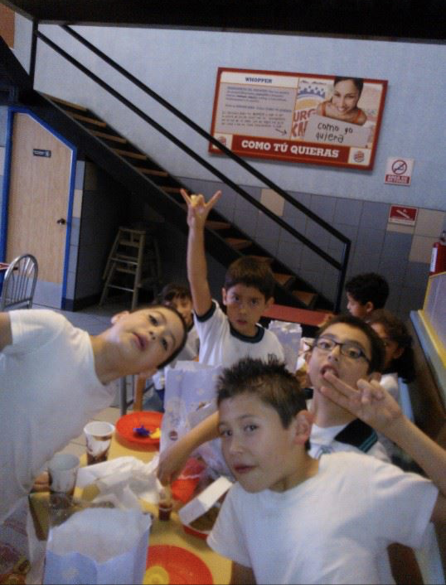
Gracias por que me dice una graan infancia.
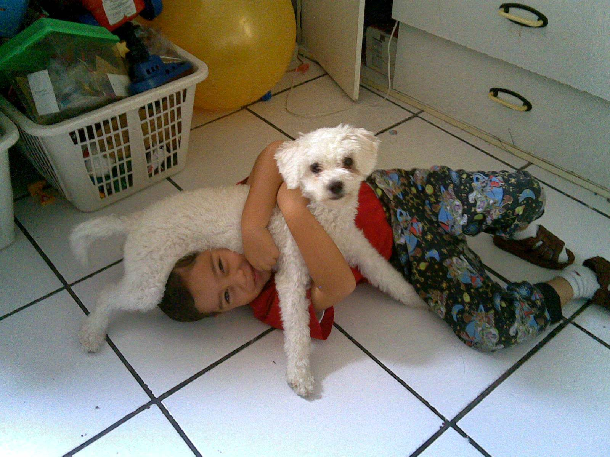
Por cuidar de toodas mis mascotas 🐶
De darme una bonita familia.
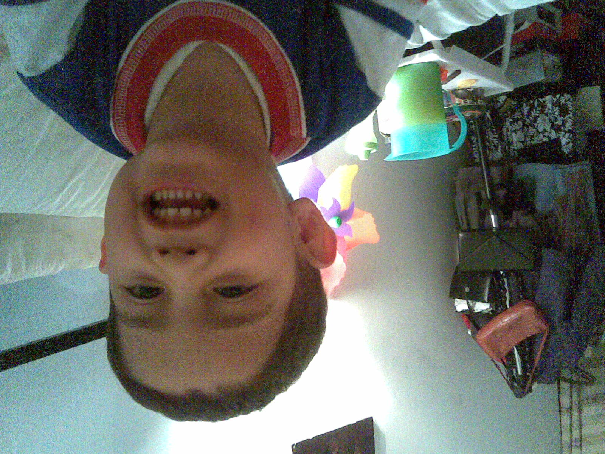
Por hacerme feliz 😆
Por mis Juguetes 🧸
Gracias por dejarme doormiiiiir 😴
Gracias por llevarme a la aventura 🌎
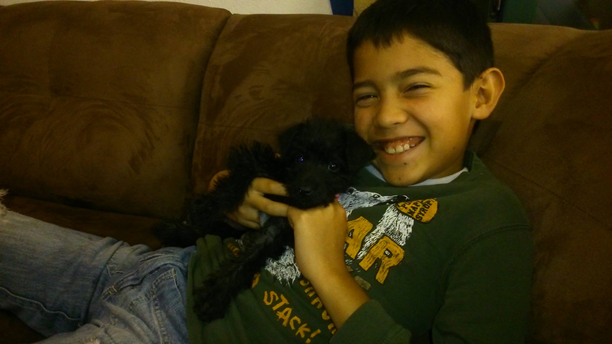
Por cuidar siempre a la Negra Tomasa.
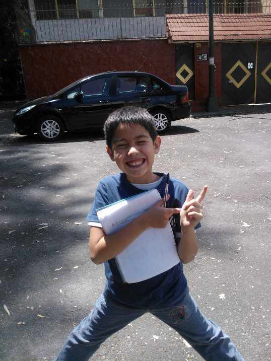
Gracias por ayudarme en tooodas las tareas 📚
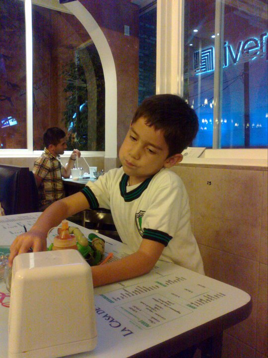
Por llevarme a festejar cada que logramos algo 😁
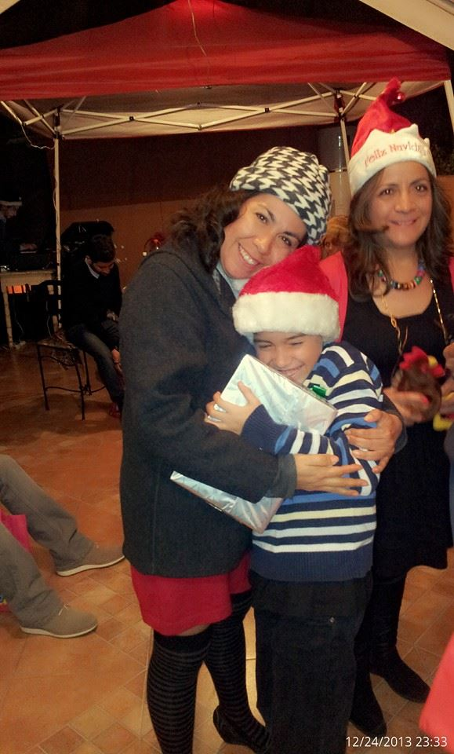
Por hacer todas las navidades especiales 🎅
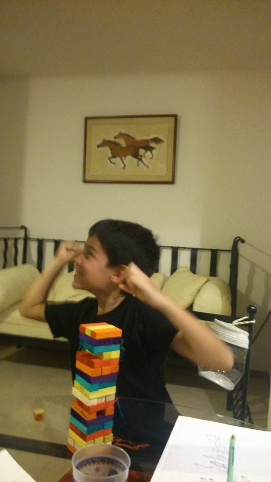
Por festejar cada logro 🏆
Por que me apoyas en cualquier actividad 😁
Por estar ahí 😁
Gracias por aguantarme jajaja
Gracias MA
Gracias por Todo!
Gracias por Todo!
Gracias por Todo!
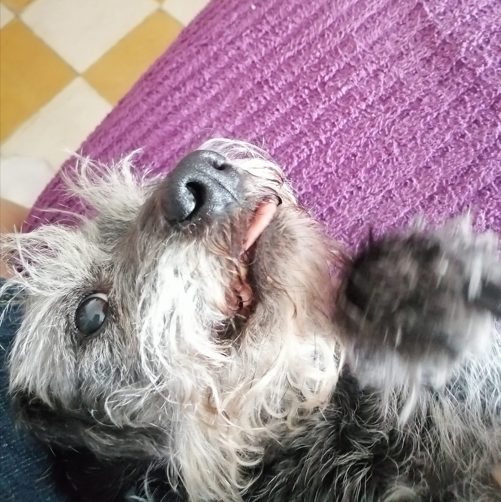 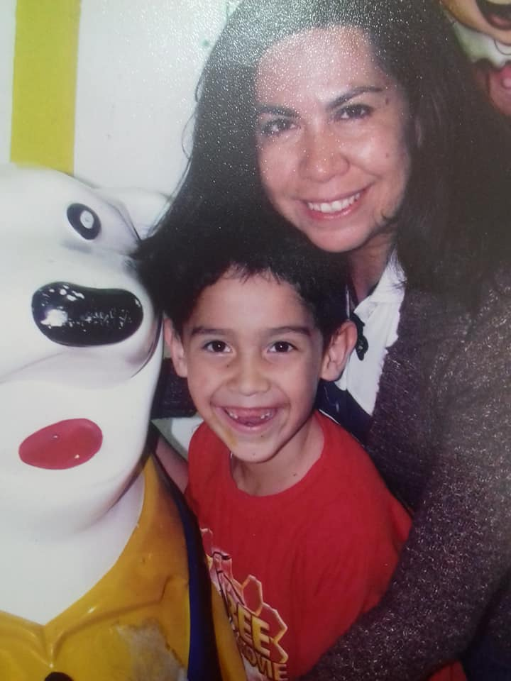 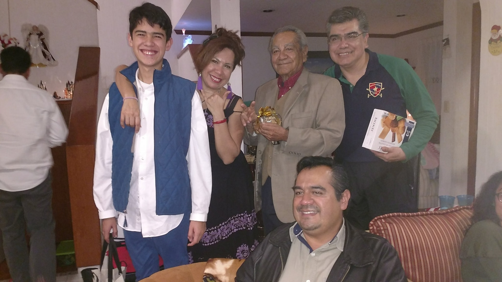